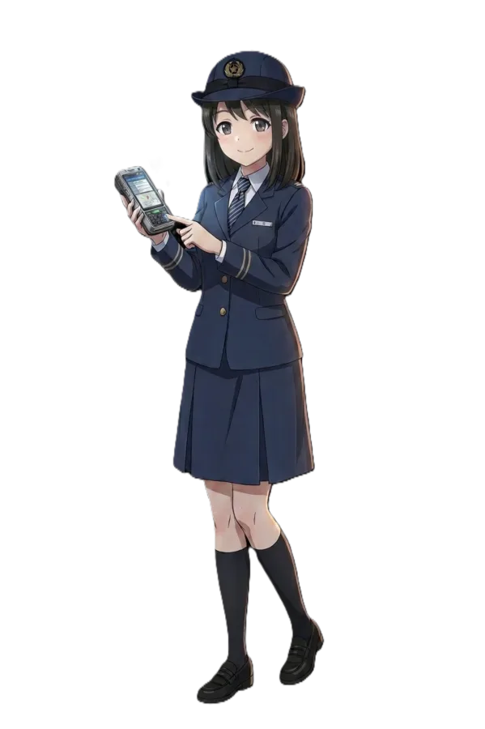

"빈주의 하늘을 달리는 보랏빛 롤러코스터"
덕빈북도 빈주시의 두 번째 도시철도 노선이자 최초의 고무차륜 경전철(K-AGT) 노선이다. 운영은 빈주도시철도공사가 맡고 있으며, 노선 색상은 강렬하고 통통 튀는 보라색(#C455F6)이다.
1호선이 빈주시를 동서로 일직선 관통하는 '대동맥'이라면, 2호선은 1호선의 수혜를 받지 못하는 가원구 남부 물류/주거단지와 장기구 남부 신도시를 거대한 'U'자 형태로 싹 쓸어 담아 빈성구 구도심(빈주역)으로 꽂아주는 '혈관' 역할을 한다.
특히 가원구의 물류 거점인 풍은동 일대와 장기구의 신흥 귀족 타운인 월삼동 주민들이 빈주역으로 향할 때 겪던 극심한 버스 환승 고통을 한 방에 해결하기 위해 야심 차게 기획되었다.
지하 깊은 곳을 뚫고 다니는 1호선과 달리, 2호선은 전 구간 지상 2층의 고가철도로 건설되었다. 덕분에 날씨가 좋은 날 열차를 타면 빈주시 전체를 조망할 수 있는 훌륭한 시티투어 뷰를 제공한다. 무인운전(RF-CBTC) 시스템이라 운전실이 따로 없어서, 열차 맨 앞유리에 붙어 풍경을 감상하려는 꼬마들과 철덕들의 자리 쟁탈전이 매우 치열하다. 어른이들도 좋아한다
다만 고가철도의 숙명상 소음 및 사생활 침해 민원이 쏟아져, 주거 밀집 구역(월삼동 등)을 지날 때는 방음터널이 캡슐처럼 씌워져 있어 약간의 답답함을 유발하기도 한다.
정확한 안내방송 문장과 표현을 원한다면 차내 안내방송은 안내방송/열차/도시철도를, 역내 안내방송은 안내방송/역을 참고하기 바랍니다.
| 한국어 | 효빈교통공사 표준 안내방송 |
|---|---|
| 영어 | Hyobin Metro Standard English |
| 중국어 / 일본어 | 주요 환승역 및 종착역 송출 |
| BGM | 출발: 바다의 아침 / 환승: 뻐꾸기의 왈츠 / 종착: 갈매기의 꿈 |
차내 안내방송과 승강장 진입 방송은 빈주 2호선의 통통 튀는 맑눈광, 김소빈(CV. 김연우)의 생기발랄한 하이톤 음성으로 송출된다. 지친 K-직장인의 영혼이 서린 1호선의 빛나 선배 방송과 달리, 소빈의 방송은 "고객님~ 출입문에 기대시면 과태료 부과 대상이에요오~ 꺄르르!" 하는 식으로 해맑은 목소리로 법적 제재를 때려 박는 합법적 광기가 묻어나는 것이 특징이다. 출근길에 듣다 보면 묘하게 킹받는다
특히 일본어 안내방송의 경우 하나자와 카나 특유의 극한 애교 톤(일명 연애 서큘레이션 톤)으로 송출되어, 열차 안의 철덕과 오타쿠들이 환승도 잊은 채 역을 서성거리게 만드는 주범이 되고 있다.[4]일본 관광객들조차 "이 노선 안내방송 성우가 왜 이렇게 호화롭냐"며 역무실에 물어보고 간다는 후문이 있다.
노선의 선형이 U자를 그리고 있어 3개 구를 골고루 맛보는 노선이다.
빈주도시철도공사 2000호대 전동차 (V2000)가 투입되었다. 3량 1편성의 아담한 사이즈이며, 쇠바퀴가 아닌 고무차륜(K-AGT)을 사용하여 소음이 적고 등판 능력이 뛰어나다. 외관은 2호선의 통통 튀는 정체성을 담은 보라색(Vivid Purple)으로 도색되어 있다. 완전 무인운전으로 돌아가지만, 열차 내 비상 대기 및 순회 검표를 위해 소빈이 같은 역무원들이 탑승하기도 한다.
| 역번호 | 역명 | 한자 역명 | 거리 | 접속 노선 | 승강장 | 횡단 | 행정동 | 소재지(구) |
|---|---|---|---|---|---|---|---|---|
| V201 | 풍 은 | 豊 銀 | 0.0 | 상대식 | ○ | 풍은동 | 가원구 | |
| V202 | 민 산 | 民 散 | 1.2 | 상대식 | × | 풍은동 | ||
| V203 | 상 만 | 上 灣 | 2.0 | 1호선 | 상대식 | ○ | 상만동 | |
| V204 | 수 옥 | 水 屋 | 3.1 | 상대식 | ○ | 수옥동 | ||
| V205 | 빈 주 | 彬州驛 | 4.2 | 1호선 광역 | 상대식 | △ | 동신동 | 빈성구 |
| V206 | 늑 골 | 肋 骨 | 5.0 | 상대식 | ○ | 동신동 | ||
| V207 | 아 은 | 阿 銀 | 6.1 | 1호선 | 상대식 | △ | 이은동 | |
| V208 | 제가동2가 | 齊家洞2街 | 7.6 | 상대식 | △ | 이은동 | ||
| V209 | 주전중앙 | 主典中央 | 8.7 | 상대식 | ○ | 주전1동 | 가원구 | |
| V210 | 신월삼 | 新月森 | 9.5 | 상대식 | △ | 월삼3동 | 장기구 | |
| V211 | 승 루 | 承 累 | 10.4 | 상대식 | △ | 시능동 | 빈성구 | |
| V212 | 장 기 | 長 崎 | 11.5 | 1호선 광역 | 상대식 | ○ | 장기4동 | 장기구 |
| V213 | 남장기 | 南長崎 | 12.6 | 상대식 | ○ | 장기1동 | ||
| V214 | 화 면 | 花 面 | 13.5 | 상대식 | △ | 장기5동 | ||
| V215 | 웅 읍 | 雄 邑 | 14.7 | 상대식 | ○ | 미천동 | ||
| V216 | 신 중 | 新 中 | 15.6 | 상대식 | ○ | 미천동 |
현재 계획 중인 2단계 구간으로, 빈성구의 핵심 주거지로 뻗어 나간다.
개통 초기(2025년 말 기준) 집계된 대략적인 승하차 추이는 다음과 같다.

▲ 2호선의 맑은 눈의 광인, 김소빈 주임
1. 맑은 눈의 광인 겸 합법적 진상 퇴치기
2호선 개통과 함께 죽어가던 빛나 주임을 구원하기 위해 나타난 2호선 전담 신입 마스코트 김소빈(23세, ENFP).
속앓이만 하던 빛나와 달리 철저한 노동법과 회사 사규를 무장하고 "고객님! 지금 폭언하셨으니 철도안전법 위반으로 경찰 부를까요? 헤헤^^"라며 해맑은 미소로 진상들을 도륙 내는 합법적 광기를 보여준다.
[2]심리학과 전공을 살려 취객의 내면의 상처(?)를 들쑤셔 그 자리에 주저앉아 오열하게 만든 민산역 전설이 있다.
2. QR 스나이퍼와 무적의 피지컬
단말기 건카타를 구사하는 선배의 뒤를 이어, 개찰구 50m 밖에서도 무임승차 빛 패턴을 읽고 달려가 QR 단말기를 찍어버리는 스나이퍼다. 게다가 154cm의 쪼꼬만 체구임에도 퇴근 후 기구 필라테스와 헬스 근육 오빠 3명 밑에서 다져진 압도적 코어 힘으로 난동 부리는 취객의 손목을 한 손으로 제압해버린다. 자본주의가 낳은 괴물 코어
3. 마라탕, 탕후루, 그리고 법인카드
MZ세대답게 점심은 무조건 마라탕 3단계, 식후엔 아샷추(아이스티+샷추가)와 탕후루를 물고 산다. 부서 회식을 꼰대 고깃집 대신 마라탕 집으로 강제 유도해 사장님의 땀구멍을 폭발시키며 법인카드를 긁게 만드는 위엄을 떨치기도 했다. 업무 틈틈이 역사 거울 앞에서 '인스타 릴스'를 찍는 게 취미다.